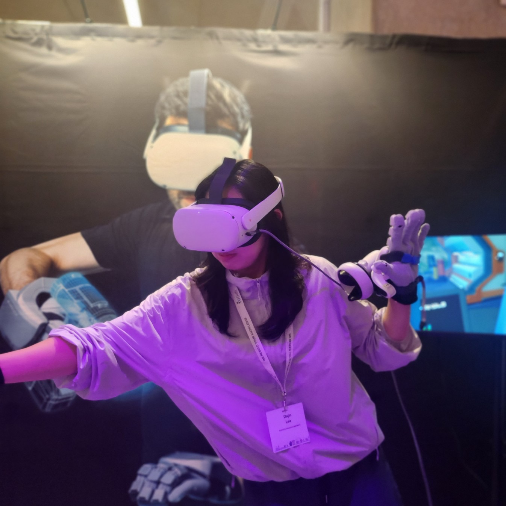

Dajin Lee, Ph.D. Student

Hello! I am a graduate student in the Interaction Laboratory at POSTECH.
My research focuses on haptics and Human-Computer Interaction (HCI).
Audio-Tactile Perception & Rendering
- Spatial Audio-Tactile Alignment (TVCG'25)
🔗
Haptic Perception & Rendering
- Magnitude Estimation Across Upper Body (TOH'24a)
🔗
- Heart Activity Modulation (UIST'24)
🔗
- Body Penetrating Phantom Sensation on Feet (WHC'21)
🔗
Human-Computer Interaction
- Embodied and Tangible Learning for Children (IJHCS'25)
🔗
- Haptic Exhibit for Learning Physics (TOH'24b)
🔗
- Authoring Tool for Vibrotactile Warning (Eurohaptics'24)
🔗
📥 Download CV